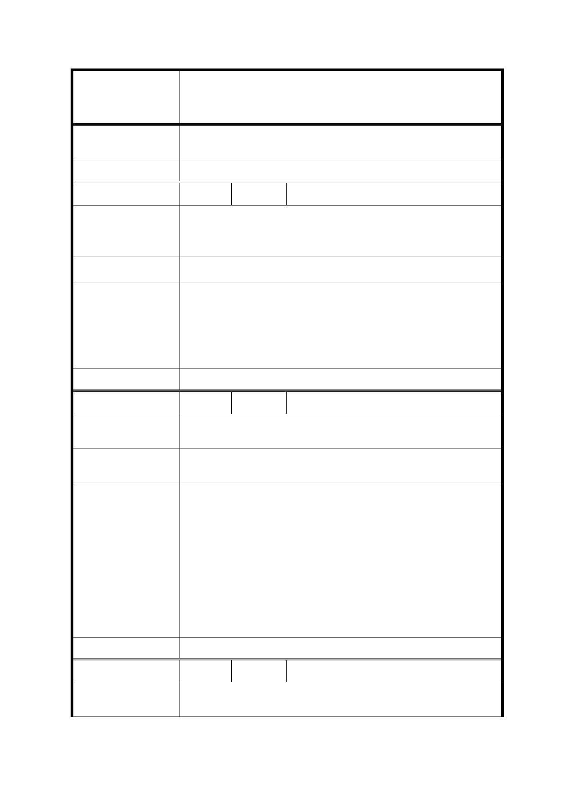

修訂臺北市信義計畫地區細部計畫（第三次通盤
案 名 檢討）案
度之原則性規定，該等原則性規定倘經臺北市都市設計及土
地使用開發許可審議委員會審議通過後始得突破之。
委 員 會 決 議 同決議一及市府回覆意見。
編
號 15
陳情人 王○幼
信義計畫區應有具規模的藝文展覽空間，故贊成本次細部計畫
陳 情 理 由 新增之二十三條，保留原新舞台位置、規模及功能相同的藝文
場地。
建 議 辦 法 現有新舞台建物應原址保留，並轉由公部門管理或委外管理。
本次通盤檢討係依 102 年 12 月 30 日｢臺北市文化資產審議委員
會第 54 次會議｣決議登錄「新舞臺」為本市文化景觀，並附帶決
市 府 回 覆 意 見 議｢於新舞臺所在基地維持原表演空間機能，未來使用如有變
更，需提送臺北市文化資產審議委員會審議｣，故配合修訂計畫
內容，以維該文化景觀。
委 員 會 決 議 同決議二及市府回覆意見。
編
號 16
陳情人 林○琴
陳 情 理 由 信義計畫區現有藝文表演之硬體設備及空間不足以因應多元的
藝文表演活動。
建 議 辦 法 建議台北市政府規劃交通方便並提供符合需求的硬體設備之藝
文表演空間。
1. 本次通盤檢討係依 102 年 12 月 30 日｢臺北市文化資產審議
委員會第 54 次會議｣決議登錄「新舞臺」為本市文化景觀，
並附帶決議｢於新舞臺所在基地維持原表演空間機能，未來
使用如有變更，需提送臺北市文化資產審議委員會審議｣，
市府回覆意見
故配合修訂計畫內容，以維該文化景觀。
2. 另依本計畫區規定，目前未開發之公有地（A13 及 A25 街廓）
均得設置｢第 15 組：社教設施｣及｢第 16 組：文康設施｣，至
是否從事藝文表演活動，仍應考量本府政策及實際開發需求
而定。
委 員 會 決 議 同決議二及市府回覆意見。
編
號 17
陳情人 李○容
陳 情 理 由 本區的居民並未被政府積極告知都市計畫變動，將造成權益損
失。
35